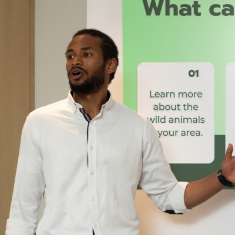
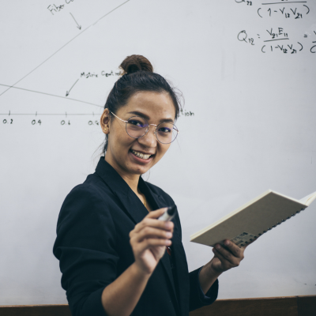
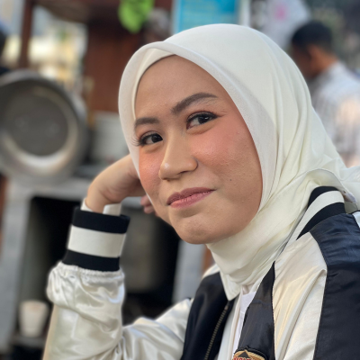
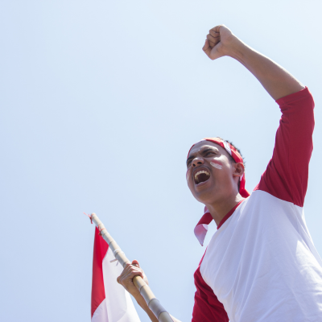
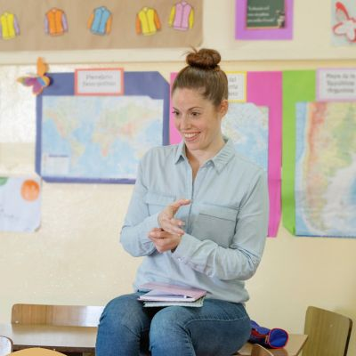
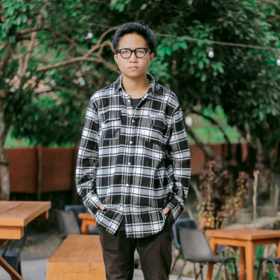
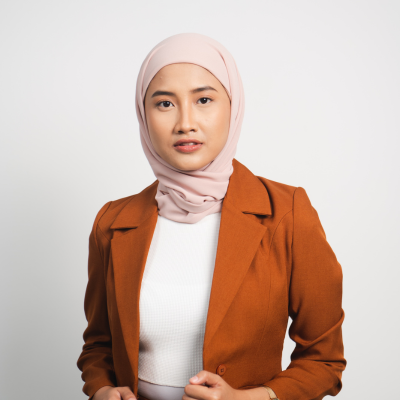
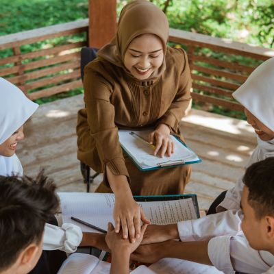

{kind=link}
{kind=link}
{kind=link}
{kind=link}
{kind=link}
{kind=link}
{kind=link}
{kind=link}
{kind=link}
{kind=link}
{kind=link}
{kind=link}
{kind=link}
{kind=link}
Jl. Wangsa Djaya
DATAR
OUR TEACHERS
Profil Guru
Slamet, S.Pd.
Kepala Sekolah

Qoyum Abdullah, S.Pd.I
Guru Pend. Agama Islam
Yusri Nur Qonitin, S.Pd.I
Guru Pend. Agama Islam

Omega Wibawa, S.Pd.
Guru Pend. Agama Kristen
Farchah, S.Pd
Guru PPKn

Waryanto, S.Pd.
Guru PPKn
Renardo Pamikat, S.Pd.
Guru PPKn
Sri Sumiyati, S.Pd.
Guru Bahasa Indonesia
Kusyatmi, M.Pd.
Guru Bahasa Indonesia
Dian Setyasih Yuniar, S.Pd.
Guru Bahasa Indonesia
Eko Febri Prasetio, M.Pd.
Guru Bahasa Indonesia
Dian Rara Sita, M.Pd.
Guru Bahasa Indonesia

Akhir Hastina, S.Pd.
Guru Bahasa Inggris
Titik Ernawati, S.Pd.
Guru Bahasa Inggris
Fallah Rufaidah, M.Pd.
Guru Bahasa Inggris
Budi Nugroho, S.Pd.
Guru Matematika

Sri Marwanto, S.Pd.
Guru Matematika
Rejeki Nur Sahala, S.Pd.
Guru Matematika

Devi Purnamasari, S.Pd.
Guru Matematika
Suwarni, S.Pd.
Guru IPA
Dra. Wiwi Triatiwi
Guru IPA
Dra. Hermianingsih
Guru IPA
Dra. Tien Rukijah
Guru IPA
Emi Barokah, S.Pd.
Guru IPA

Drs. Sukiman
Guru IPS
Dra. Neneng Kusmijati
Guru IPS
Bambang Sutikno, S.Pd.
Guru IPS
Dian Anggoro M, SE.
Guru IPS

Asriningsih, S.Pd.
Guru PJOK
E. Herni Widiastuti, S.Pd.
Guru Penjasorkes
Muhammad Abdul Wahid, S.Pd.
Guru Penjasorkes
Restu Hardani, S.Pd.
Guru Seni Budaya
Saliman, S.Pd.
Guru Seni Budaya
Damar Anggit S., M.Pd.
Guru Seni Budaya
Eko Yudi Supriyanto, M.Eng.
Guru Prakarya
Eko Yuli Iriyani W., M.Pd.
Guru Bahasa Jawa
Puji Astuti, S.Pd.
Guru Bahasa Jawa

Daud Dwi Sudarto, M.Pd.
Guru BK
Semi Dwi Lestari, S.Pd.
Guru BK
Ramisih, S.Pd.
Guru BK
Zaenur Rijal, S.Pd.
Guru BK